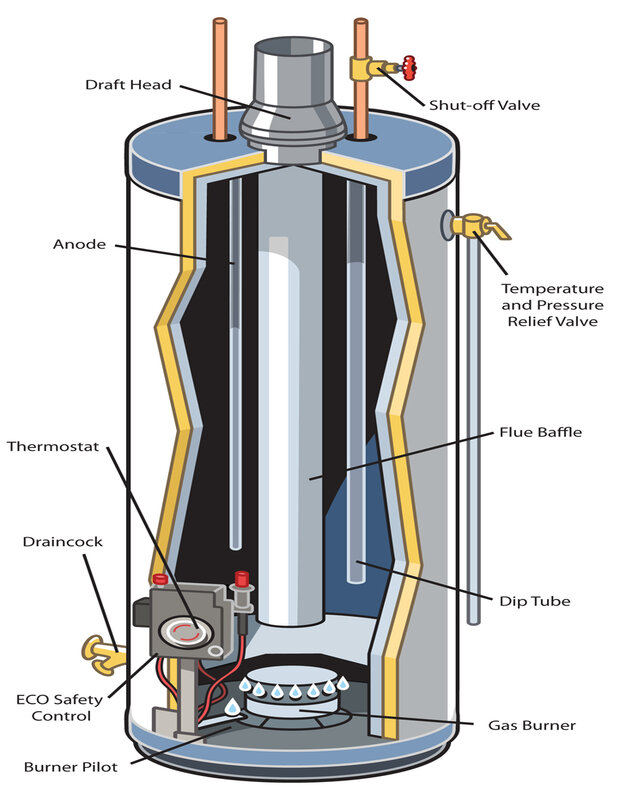

Faucet Repairs
Overview

Too often we shy away from simple and straight-forward plumbing repairs because of past bad experiences, or terrible advice from the "expert" at the local hardware store. Because of this we choose to pay the extremely high repair price for a job that took less than a half hour to complete. For instance, one of the most annoying plumbing problem in a home is a dripping faucet, but it is also very easy to repair.Yet, it is one of the most frequent calls a plumbers gets. By following the proper steps and learning simple tips that dripping faucet will be a thing of the past. Here at Plumb'd Crazy we will share those steps and tips so you can feel confident about your plumbing repairs projects.
One of the more expensive, and least thought about piece of equipment in your home is your waterheater. Life is bliss when they are working like they are supposed to but, they can cause serious damage when they are not maintained properly. With a few straigtforward maintenance steps and tips you can get double the life out of your heater. Plumb'd Crazy will share these tips with you. When followed you can feel confident knowing that your heater will continue to perform according to its design for many years to come.